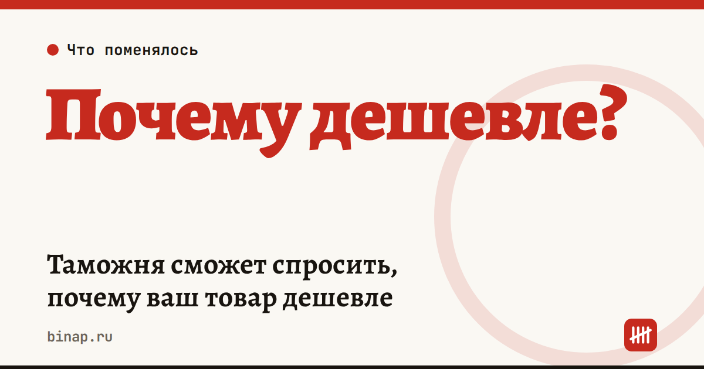

Таможня сможет спросить, почему ваш товар дешевле

Евразийская экономическая комиссия (ЕЭК) предложила новый признак занижения таможенной стоимости: цена заметно ниже, чем у других импортёров того же товара. По данным «Коммерсанта» и Клерка, пока это проект.
Коротко
- Признаком недостоверной стоимости может стать значительная разница стоимости идентичных и однородных товаров у разных импортёров на сопоставимых условиях.
- По запросу таможни импортёр должен будет письменно объяснить разницу и подтвердить документами: перепиской с продавцом, аналитикой мировых цен.
- Что считать «значительной» разницей, сколько дней на ответ и когда решение вступит в силу, в проекте не названо.
- Главный риск — простой груза на складе временного хранения, пока идёт спор, и расходы на хранение.
- Готовиться можно уже сейчас: папка документов по каждой партии закрывает и нынешние вопросы таможни.
Сроки, изменения и разборы для ИП и самозанятых — каждое утро в Telegram и MAX. Подпишитесь, чтобы не пропустить.
Что меняется
| Сейчас | По проекту ЕЭК |
|---|---|
| признаки занижения — противоречия в документах и цена ниже аналогов | добавляется сравнение с ценами других импортёров того же товара |
| таможня может запросить прайс-листы и пояснения о скидках | импортёр письменно объясняет разницу и подтверждает её документами |
Эксперты в «Коммерсанте» критикуют проект за отсутствие чётких критериев. Объективные причины расхождения цены, по мнению юриста Андрея Гусева: скидки, момент сделки, условия оплаты, объём поставки.
Папка документов по каждой партии
- Контракт и спецификация с ценой.
- Инвойс и платёжные документы.
- Переписка с поставщиком о цене, скидке и условиях оплаты.
- Прайс-листы поставщика и конкурентов, скриншоты мировых цен с датой.
- Объяснение, почему выбран этот поставщик и цена: объём, сроки, отсрочка.
Сколько стоит простой: расчёт
Расчёт редакции, цифры условные: хранение контейнера на складе временного хранения — 3 000 ₽ в сутки. Если спор о стоимости займёт 10 дней, это 30 000 ₽ на одну партию плюс сдвиг продаж. Подставьте тариф своего склада и заложите запас в себестоимость.
Ввозите товары из Беларуси — проверьте и правила обеспечительного платежа: импорт из Беларуси без платежа до 30.06.2027. Контрагентов до оплаты — проверяйте бесплатно.
Частые вопросы
Это уже действует? Нет, это проект решения ЕЭК, срок вступления в силу в источниках не назван.
Какие документы подойдут для объяснения цены? По проекту, например, переписка с продавцом и аналитика мировых цен из проверенных источников. Полезно добавить контракт, прайс-листы и расчёт скидки.
Что будет с грузом, пока таможня проверяет цену? Он может стоять на складе временного хранения, и за это придётся платить по тарифу склада.